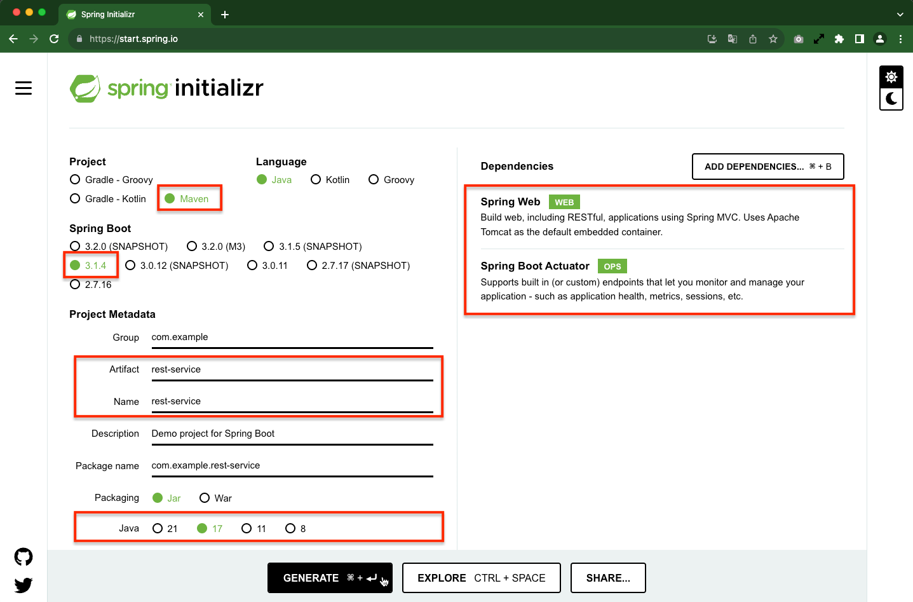
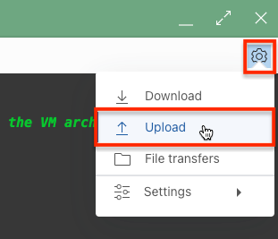
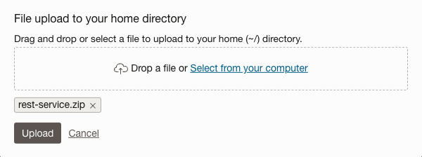

8.2 GraalVM 사용하여 Spring Boot 3 애플리케이션 개발하기
Spring Boot 예제를 바탕으로 앱 개발, 컨테이너 이미지 빌드, OKE에 배포하는 과정을 확인해 봅니다.
Spring Boot 기반 마이크로 서비스 만들기
Spring Initializr를 사용하여 기본 프로젝트 소스파일을 기반으로 개발을 하게 됩니다.
-
Spring Initializr을 통해 프로젝트 파일을 만듭니다.
-
방법 1. Spring Initializr를 사용하여 기본 프로젝트 소스파일을 만듭니다.
-
아래 그림과 같이 프로젝트 정보를 입력하고 Generate를 클릭하여 소스파일을 생성합니다.
-
Native Image를 테스트하기 위해 Spring Boot 3 버전을 선택합니다.

-
다운로드 받은 파일을 Cloud Shell에 업로드 합니다.

 -
Cloud Shell에서 업로드된 파일을 unzip으로 압축해제 합니다.
-
-
방법 2. Spring Initializr를 브라우저 대신 아래 명령을 통해 Cloud Shell에서 바로 기본 프로젝트 소스파일을 만듭니다.
curl https://start.spring.io/starter.tgz -d type=maven-project -d bootVersion=3.1.4 -d baseDir=rest-service -d name=rest-service -d artifactId=rest-service -d javaVersion=17 -d dependencies=web,actuator | tar -xzvf -
-
-
rest-service 폴더로 이동합니다.
-
요청에 대한 응답 메시지를 아래와 같은 JSON 메시지 응답하도록 코드를 구현할 예정입니다.
{ "id": 1, "content": "Hello, World!" }아래 코드를 복사하여 자바 클래스파일(src/main/java/com/example/restservice/Greeting.java)을 에 작성합니다.
package com.example.restservice; public class Greeting { private final long id; private final String content; public Greeting(long id, String content) { this.id = id; this.content = content; } public long getId() { return id; } public String getContent() { return content; } } -
/greeting URL로 요청을 보내면, 앞서 본 JSON 메시지 응답하도록 코드를 src/main/java/com/example/restservice/GreetingController.java 위치에 작성합니다.
package com.example.restservice; import java.util.concurrent.atomic.AtomicLong; import org.springframework.web.bind.annotation.GetMapping; import org.springframework.web.bind.annotation.RequestParam; import org.springframework.web.bind.annotation.RestController; @RestController public class GreetingController { private static final String template = "Hello, %s!"; private final AtomicLong counter = new AtomicLong(); @GetMapping("/greeting") public Greeting greeting(@RequestParam(value = "name", defaultValue = "World") String name) { return new Greeting(counter.incrementAndGet(), String.format(template, name)); } } -
Kubernetes에서는 컨테이너 기동후 준비시간(readiness), 헬스체크를(liveness)를 Spring Boot에 활성화하기 src/main/resources/application.properties 파일에 다음 설정을 추가합니다.
management.health.probes.enabled=true
JDK 버전 선택하기
-
CloudShell 상의 현재 JDK 버전을 확인하고, csruntimectl을 통해 생성한 Spring Boot 설정에 맞게 JDK 17로 변경합니다.
$ csruntimectl java list graalvmeejdk-17 /usr/lib64/graalvm/graalvm22-ee-java17 * oraclejdk-11 /usr/java/jdk-11.0.17 oraclejdk-1.8 /usr/lib/jvm/jdk-1.8-oracle-x64 -
JDK 17로 변경합니다
$ csruntimectl java set graalvmeejdk-17 The current managed java version is set to graalvmeejdk-17. -
선택한 버전을 확인합니다.
$ java -version java version "17.0.8" 2023-07-18 LTS Java(TM) SE Runtime Environment GraalVM EE 22.3.3 (build 17.0.8+9-LTS-jvmci-22.3-b21) Java HotSpot(TM) 64-Bit Server VM GraalVM EE 22.3.3 (build 17.0.8+9-LTS-jvmci-22.3-b21, mixed mode, sharing)
빌드후 JAR 파일로 실행하기
-
실행을 위해 코드를 빌드합니다.
./mvnw clean package -
빌드된 JAR 파일을 실행합니다.
java -jar target/rest-service-0.0.1-SNAPSHOT.jar아래와 같이 서비스가 빠르게 실행되고, 내장 Tomcat을 통해 8080 포트로 실행되는 것을 빠르게 실행되는 것을 알 수 있습니다.
$ java -jar target/rest-service-0.0.1-SNAPSHOT.jar . ____ _ __ _ _ /\\ / ___'_ __ _ _(_)_ __ __ _ \ \ \ \ ( ( )\___ | '_ | '_| | '_ \/ _` | \ \ \ \ \\/ ___)| |_)| | | | | || (_| | ) ) ) ) ' |____| .__|_| |_|_| |_\__, | / / / / =========|_|==============|___/=/_/_/_/ :: Spring Boot :: (v3.1.4) 2023-09-25T14:19:48.177Z INFO 6819 --- [ main] c.e.restservice.RestServiceApplication : Starting RestServiceApplication v0.0.1-SNAPSHOT using Java 17.0.8 with PID 6819 (/home/winter/rest-service/target/rest-service-0.0.1-SNAPSHOT.jar started by winter in /home/winter/rest-service) 2023-09-25T14:19:48.182Z INFO 6819 --- [ main] c.e.restservice.RestServiceApplication : No active profile set, falling back to 1 default profile: "default" 2023-09-25T14:19:51.126Z INFO 6819 --- [ main] o.s.b.w.embedded.tomcat.TomcatWebServer : Tomcat initialized with port(s): 8080 (http) 2023-09-25T14:19:51.143Z INFO 6819 --- [ main] o.apache.catalina.core.StandardService : Starting service [Tomcat] 2023-09-25T14:19:51.144Z INFO 6819 --- [ main] o.apache.catalina.core.StandardEngine : Starting Servlet engine: [Apache Tomcat/10.1.13] 2023-09-25T14:19:51.390Z INFO 6819 --- [ main] o.a.c.c.C.[Tomcat].[localhost].[/] : Initializing Spring embedded WebApplicationContext 2023-09-25T14:19:51.402Z INFO 6819 --- [ main] w.s.c.ServletWebServerApplicationContext : Root WebApplicationContext: initialization completed in 2971 ms 2023-09-25T14:19:52.488Z INFO 6819 --- [ main] o.s.b.a.e.web.EndpointLinksResolver : Exposing 1 endpoint(s) beneath base path '/actuator' 2023-09-25T14:19:52.637Z INFO 6819 --- [ main] o.s.b.w.embedded.tomcat.TomcatWebServer : Tomcat started on port(s): 8080 (http) with context path '' 2023-09-25T14:19:52.660Z INFO 6819 --- [ main] c.e.restservice.RestServiceApplication : Started RestServiceApplication in 5.509 seconds (process running for 6.585) -
테스트를 위해 브라우저 탭을 하나 더 열고 동일한 Oracle Cloud 계정으로 접속하여 Cloud Shell을 실행합니다.
-
두 번째 Cloud Shell에서 서비스를 테스트합니다.
curl http://localhost:8080/greeting; echo{"id":1,"content":"Hello, World!"} -
첫 번째 Cloud Shell에서 실행되는 앱을 중지합니다.
Native Image로 실행하기
-
실행을 위해 코드를 빌드합니다.
./mvnw -Pnative native:compile-
빌드 예시
- CloudShell에서는 CPU 자원이 제한되어 Native Image를 만드는 데 시간이 더 걸릴 수 있습니다.
... ======================================================================================================================== GraalVM Native Image: Generating '/home/winter/rest-service/target/rest-service' (executable)... ======================================================================================================================== [1/7] Initializing... (16.1s @ 0.26GB) Version info: 'GraalVM 22.3.3 Java 17 EE' Java version info: '17.0.8+9-LTS-jvmci-22.3-b21' ... [2/7] Performing analysis... [**********] (175.1s @ 1.76GB) 17,049 (92.22%) of 18,488 classes reachable 27,095 (67.72%) of 40,008 fields reachable 88,975 (64.53%) of 137,888 methods reachable 1,046 classes, 285 fields, and 5,506 methods registered for reflection 64 classes, 70 fields, and 55 methods registered for JNI access 4 native libraries: dl, pthread, rt, z [3/7] Building universe... (20.7s @ 2.65GB) [4/7] Parsing methods... [****] (19.2s @ 1.84GB) [5/7] Inlining methods... [***] (7.7s @ 1.96GB) [6/7] Compiling methods... [******************] (350.2s @ 2.01GB) [7/7] Creating image... (20.2s @ 1.61GB) ... ... ... ======================================================================================================================== Finished generating '/home/kildong/rest-service/target/rest-service' in 10m 22s. [INFO] ------------------------------------------------------------------------ [INFO] BUILD SUCCESS [INFO] ------------------------------------------------------------------------ [INFO] Total time: 10:45 min [INFO] Finished at: 2023-09-25T16:05:30Z [INFO] ------------------------------------------------------------------------
-
-
빌드된 Native Image를 실행합니다.
./target/rest-service아래와 같이 서비스가 빠르게 실행되고, 내장 Tomcat을 통해 8080 포트로 실행되는 것을 빠르게 실행되는 것을 알 수 있습니다. JAR로 실행할 때는 시작될때 까지 앞선 로그에서 5.509 초가 걸렸으나, 아래 로그 기준 0.079초가 걸립니다.
./target/rest-service . ____ _ __ _ _ /\\ / ___'_ __ _ _(_)_ __ __ _ \ \ \ \ ( ( )\___ | '_ | '_| | '_ \/ _` | \ \ \ \ \\/ ___)| |_)| | | | | || (_| | ) ) ) ) ' |____| .__|_| |_|_| |_\__, | / / / / =========|_|==============|___/=/_/_/_/ :: Spring Boot :: (v3.1.4) 2023-09-25T16:08:52.803Z INFO 21140 --- [ main] c.e.restservice.RestServiceApplication : Starting AOT-processed RestServiceApplication using Java 17.0.8 with PID 21140 (/home/kildong/rest-service/target/rest-service started by kildong in /home/kildong/rest-service) 2023-09-25T16:08:52.803Z INFO 21140 --- [ main] c.e.restservice.RestServiceApplication : No active profile set, falling back to 1 default profile: "default" 2023-09-25T16:08:52.818Z INFO 21140 --- [ main] o.s.b.w.embedded.tomcat.TomcatWebServer : Tomcat initialized with port(s): 8080 (http) 2023-09-25T16:08:52.819Z INFO 21140 --- [ main] o.apache.catalina.core.StandardService : Starting service [Tomcat] 2023-09-25T16:08:52.819Z INFO 21140 --- [ main] o.apache.catalina.core.StandardEngine : Starting Servlet engine: [Apache Tomcat/10.1.13] 2023-09-25T16:08:52.826Z INFO 21140 --- [ main] o.a.c.c.C.[Tomcat].[localhost].[/] : Initializing Spring embedded WebApplicationContext 2023-09-25T16:08:52.826Z INFO 21140 --- [ main] w.s.c.ServletWebServerApplicationContext : Root WebApplicationContext: initialization completed in 23 ms 2023-09-25T16:08:52.863Z WARN 21140 --- [ main] i.m.c.i.binder.jvm.JvmGcMetrics : GC notifications will not be available because MemoryPoolMXBeans are not provided by the JVM 2023-09-25T16:08:52.867Z INFO 21140 --- [ main] o.s.b.a.e.web.EndpointLinksResolver : Exposing 1 endpoint(s) beneath base path '/actuator' 2023-09-25T16:08:52.873Z INFO 21140 --- [ main] o.s.b.w.embedded.tomcat.TomcatWebServer : Tomcat started on port(s): 8080 (http) with context path '' 2023-09-25T16:08:52.873Z INFO 21140 --- [ main] c.e.restservice.RestServiceApplication : Started RestServiceApplication in 0.079 seconds (process running for 0.084) -
테스트를 위해 브라우저 탭을 하나 더 열고 동일한 Oracle Cloud 계정으로 접속하여 Cloud Shell을 실행합니다.
-
두 번째 Cloud Shell에서 서비스를 테스트합니다. 결과는 동일합니다.
curl http://localhost:8080/greeting; echo{"id":1,"content":"Hello, World!"} -
첫 번째 Cloud Shell에서 실행되는 앱을 중지합니다.
Container Image 만들기
쿠버네티스에서 실행하기 위해서는 구동할 서비스 애플리케이션을 컨테이너화 하여야 합니다. Docker 클라이언트를 통해 컨테이너 이미지를 만듭니다.
-
Getting Started | Spring Boot Docker 예시에서 보면 Dockerfile 베이스 이미지로 eclipse-temurin:17-jdk-alpine을 사용합니다.
# Dockerfile FROM eclipse-temurin:17-jdk-alpine VOLUME /tmp ARG JAR_FILE=target/*.jar COPY ${JAR_FILE} app.jar ENTRYPOINT ["java","-jar","/app.jar"] -
여기서는 Oracle Container Registry (OCR) 에서 제공하는 Oracle GraalVM Container Image을 베이스 이미지로 사용합니다. 프로젝트 폴더에 Dockerfile을 아래와 같이 만듭니다.
-
Dockerfile: JAR 파일 사용시
FROM container-registry.oracle.com/graalvm/jdk:17 WORKDIR /app ARG JAR_FILE=target/*.jar COPY ${JAR_FILE} app.jar ENTRYPOINT ["java","-jar","/app/app.jar"] -
Dockerfile.native: 빌드된 Native Image 사용시
FROM container-registry.oracle.com/os/oraclelinux:8-slim WORKDIR /app ARG APP_FILE=target/rest-service COPY ${APP_FILE} /app/native ENTRYPOINT ["/app/native"]
-
-
이미지를 빌드합니다.
docker build -t spring-boot-greeting:1.0 . docker build -t spring-boot-greeting:1.0-native . -f Dockerfile.native -
현재 로컬(여기서는 Cloud Shell)에 빌드된 이미지를 조회해 봅니다. Native Image는 JAR 파일을 실행하기 위한 JDK 등의 파일들이 필요없기 때문에 이미지 사이즈가 상대적으로 작습니다.
$ docker images REPOSITORY TAG IMAGE ID CREATED SIZE spring-boot-greeting 1.0 5d0eaaec7e6d 13 seconds ago 658MB spring-boot-greeting 1.0-native 21acc4018289 About a minute ago 189MB container-registry.oracle.com/os/oraclelinux 8-slim 254a7c26275f 3 days ago 110MB container-registry.oracle.com/graalvm/jdk 17 ba31190ec464 3 weeks ago 637MB
OCIR에 이미지 등록하기
-
OCIR에 컨테이너 이미지를 푸시하기 위해서는 다음과 같은 이미지 태그 네이밍 규칙을 따라야 합니다. 아래 정보를 확인합니다.
<region-key or region-identifier>.ocir.io/<tenancy-namespace>/<repo-name>:<tag>- region-key: 지금은 Region Key, Region Identifier 둘다 지원하므로, 서울은 icn, ap-seoul-1, 춘천은 yny, ap-chuncheon-1을 쓰면 됩니다. 전체 주소 정보는 OCIR Available Endpoint에서 확인하세요.
- tenancy-namespace: OCI 콘솔 Tenancy 상세 정보에서 Object Storage Namespace로 확인하거나, Cloud Shell에서 oci os ns get으로 확인합니다.
- repo-name: 이미지 이름, 경로가 있는 경우 경로를 포함한 이름
winter@cloudshell:rest-service (ap-chuncheon-1)$ oci os ns get { "data": "axjowrxxxxxx" } winter@cloudshell:rest-service (ap-chuncheon-1)$ echo $OCI_REGION ap-chuncheon-1 -
OCIR 등록을 위해 기존 이미지에 추가로 태그를 답니다.
docker tag spring-boot-greeting:1.0 ap-chuncheon-1.ocir.io/${tenancy_namespace}/spring-boot-greeting:1.0 docker tag spring-boot-greeting:1.0-native ap-chuncheon-1.ocir.io/${tenancy_namespace}/spring-boot-greeting:1.0-native동일한 이미지에 태그가 추가된 것을 알 수 있습니다.
$ docker images REPOSITORY TAG IMAGE ID CREATED SIZE ap-chuncheon-1.ocir.io/axjowrxxxxxx/spring-boot-greeting 1.0 5d0eaaec7e6d 3 minutes ago 658MB spring-boot-greeting 1.0 5d0eaaec7e6d 3 minutes ago 658MB ap-chuncheon-1.ocir.io/axjowrxxxxxx/spring-boot-greeting 1.0-native 21acc4018289 3 minutes ago 189MB spring-boot-greeting 1.0-native 21acc4018289 3 minutes ago 189MB container-registry.oracle.com/os/oraclelinux 8-slim 254a7c26275f 3 days ago 110MB container-registry.oracle.com/graalvm/jdk 17 ba31190ec464 3 weeks ago 637MB -
OCIR에 이미지를 Push 하기 위해서는 Docker CLI로 OCIR에 로그인이 필요합니다. Username 및 Password는 다음과 같습니다.
- Username:
<tenancy-namespace>/<user-name>형식으로 user-name은 OCI 서비스 콘솔에서 유저 Profile에서 보이는 유저명을 사용합니다. - Password: 사용자의 Auth Token을 사용합니다. My Profile > Auth tokens > Generate token 을 통해 생성합니다.
아래와 같이 Docker CLI로 로그인합니다.
# IDCS 유저인 경우 docker login ap-chuncheon-1.ocir.io -u ${tenancy_namespace}/oracleidentitycloudservice/~~~ # OCI Native 유저인 경우 docker login ap-chuncheon-1.ocir.io -u ${tenancy_namespace}/~~~winter@cloudshell:~ (ap-chuncheon-1)$ docker login ap-chuncheon-1.ocir.io -u ${tenancy_namespace}/winter Password: WARNING! Your password will be stored unencrypted in /home/winter/.docker/config.json. Configure a credential helper to remove this warning. See https://docs.docker.com/engine/reference/commandline/login/#credentials-store Login Succeeded - Username:
-
OCIR를 위해 단 이미지 태그를 사용하여 이미지를 Push합니다.
docker push ap-chuncheon-1.ocir.io/${tenancy_namespace}/spring-boot-greeting:1.0 docker push ap-chuncheon-1.ocir.io/${tenancy_namespace}/spring-boot-greeting:1.0-native
OKE에 마이크로 서비스 배포하기
-
OCIR에 이미지를 사용하여 OKE에 컨테이너를 기동하기 위해서는 OKE에서 OCIR 이미지에 접근하는 권한이 필요합니다. OCIR Private Repository로 등록했기 때문에 OKE에 접속을 위한 secret를 생성합니다. 이미 Cloud Shell에서 Docker CLI로 OCI에 로그인 했으므로 해당 정보를 이용하여 생성합니다.
kubectl create secret generic ocir-secret \ --from-file=.dockerconfigjson=$HOME/.docker/config.json \ --type=kubernetes.io/dockerconfigjson -
다음 YAML 파일을 이용해 OKE에 배포합니다. Load Balancer 사용도 함께 진행하기 위해 Service Type도 함께 배포합니다.
-
배포 파일 생성합니다. 예, 파일명: spring-boot-greeting.yaml
IMAGE_REGISTRY_PATH: 각자에 맞게 수정 필요,- JAR 이미지 사용하는 경우 예시)
ap-chuncheon-1.ocir.io/axjowrxxxxxx/spring-boot-greeting:1.0 - Native Image를 사용하는 이미지 사용하는 경우 예시)
ap-chuncheon-1.ocir.io/axjowrxxxxxx/spring-boot-greeting:1.0-native
- JAR 이미지 사용하는 경우 예시)
apiVersion: apps/v1 kind: Deployment metadata: labels: app: spring-boot-greeting name: spring-boot-greeting-deployment spec: replicas: 1 selector: matchLabels: app: spring-boot-greeting template: metadata: labels: app: spring-boot-greeting spec: containers: - name: spring-boot-greeting image: $IMAGE_REGISTRY_PATH imagePullSecrets: - name: ocir-secret --- apiVersion: v1 kind: Service metadata: name: spring-boot-greeting-service spec: selector: app: spring-boot-greeting ports: - protocol: TCP port: 80 targetPort: 8080 type: LoadBalancer
-
-
작성한 yaml 파일을 통해 개발한 Spring Boot 앱을 배포합니다.
kubectl apply -f spring-boot-greeting.yaml -
kubectl get all 명령으로 배포된 자원을 확인합니다.
$kubectl get all NAME READY STATUS RESTARTS AGE pod/spring-boot-greeting-deployment-84c4865b98-7rmrp 1/1 Running 0 34s NAME TYPE CLUSTER-IP EXTERNAL-IP PORT(S) AGE service/kubernetes ClusterIP 10.96.0.1 <none> 443/TCP 10h service/spring-boot-greeting-service LoadBalancer 10.96.75.242 150.xxx.xxx.xxx 80:32418/TCP 35s NAME READY UP-TO-DATE AVAILABLE AGE deployment.apps/spring-boot-greeting-deployment 1/1 1 1 35s NAME DESIRED CURRENT READY AGE replicaset.apps/spring-boot-greeting-deployment-84c4865b98 1 1 1 35s -
Pod가 정상적으로 기동하였습니다. LoadBalancer의 EXTERNAL-IP를 통해 서비스를 요청합니다.
curl http://150.xxx.xxx.xxx/greeting; echo{"id":1,"content":"Hello, World!"} -
JAR 파일 컨테이너 이미지, Native Image 컨테이너 이미지 둘 중 어느 것을 사용해도 결과는 당연히 동입합니다. 대신 Native Image를 사용하면, 이미지 사이즈도 작고, 기동 자체도 빨라 컨테이너 Pod 기동이 더 빠릅니다.
이 글은 개인으로서, 개인의 시간을 할애하여 작성된 글입니다. 글의 내용에 오류가 있을 수 있으며, 글 속의 의견은 개인적인 의견입니다.